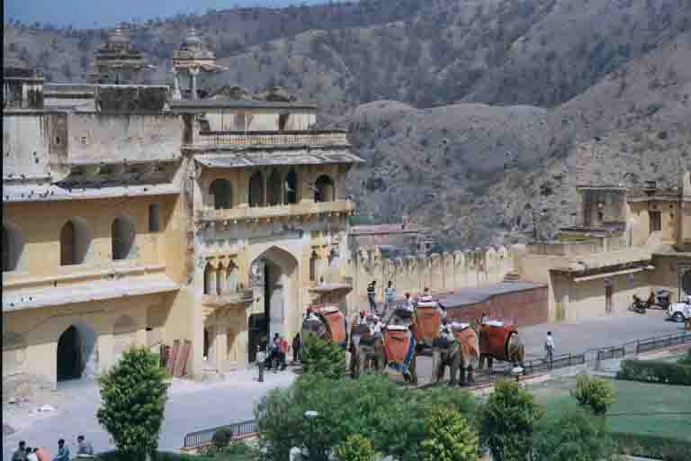
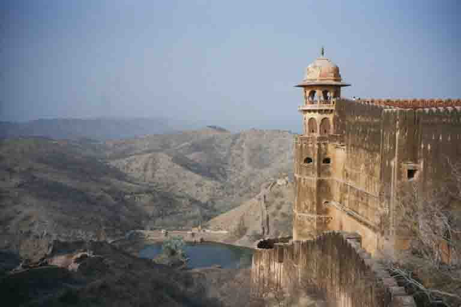
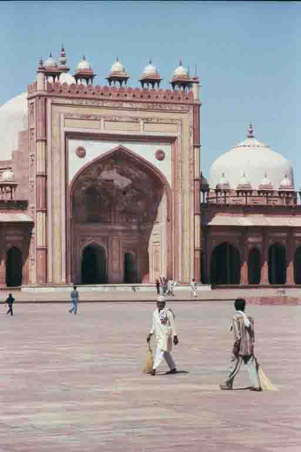

March 23, 2002 • Bharatpur, India • by sue_and_nathan
Palaces, forts and tigers
Bharatpur, India
After meeting up wih Viv and Heleyne in Mumbai, the four of us embarked on a train journey north to the hillstation Mount Abu - little did we know that this would be one of those journeys to remember - maybe in a few years time we'll be able to joke about it.
It all started on a hot and humid evening when we squashed ourselves into a tiny old taxi (somehow we always manage to end up with the most decrepid vehicle in town!!) The station was two hot and uncomfortable hours away and we arrived ten minutes before departure. As is normal there was a huge amount of chaos on the platform as thousands of people crammed themselves and their luggage onboard. Having little experience of boarding trains in India we ran up and down the platform, carrying our heavy packs, trying to find our a/c cabin. As departure time came and went the hustle and bustle reached fever pitch and we still couldn't find our carriage. Every now and then we'd hear a whistle and we'd all leap on the nearest carriage in case it moved off. We must have been a funny sight! Long after the scheduled departure time we finally found our seats and sat down to recover. And there we sat....Four hours later we still hadn't moved one inch nearer Mount Abu so we made our beds and snuggled down for the night. Much to our surprise and amazement, by the morning we still hadn't moved. We finally got news that there had been a bad accident five hours up the line, which we were glad to have missed, but the train would definitely move at midday. Anyway, we finally pulled into Mount Abu station 35 hours after we had that mad panicstricken rush to board. From here on we always arrive well before the departure time but we somehow still end up running along the platform carrying heavy bags!
Most tourists go to Jaisalmer to take a camel safari in the desert, we went to Bikaner and Sue managed to talk me into a two day safari with 'Camel man'. We were introduced to our camels - mine was 'Raja Hindustani' and Sues was called 'Lion' - and off we toddled into the desert, me with a scarf around my head trailing in the breeze having a Peter O'Toole moment!! By lunchtime we had got into the rhythm of camel riding and had worked up a fine appetite for curry, rice and chappatis. The four guys looking after us had just about everything, apart from the kitchen sink, on a camel cart and had obviously been doing this for a while as they soon cooked up a fine lunch. We, on the otherhand, sat on mattresses in the shade of a tree relaxing and taking the strain off of our aching posteriors!
After an afternoon riding through....well, not really that much...we arrived at the site chosen for the night camp. As night fell the cooks prepared more spicy specialities for our delight. Viv and Heleyne arrived by jeep to join us for the meal under the stars. Much rum was consumed and we all danced around the campfire to live Rajasthani music.
On the second day it was a whole lot hotter, but the camel guys didn't seem even warm. Dullah, whose brother had 11 sons (!), was our entertainment for the day and showed us how to jump from one moving camel to another and how to dance, standing up, on one! We passed through a few small villages and this always caused a commotion as everyone came out to say 'hello' and the kids shouted 'white!white!' while others just came out to watch the crazy Westerners that ride camels in the heat of the midday sun. My camel would usually stop at the village well and bend to drink it dry while nearly catapulting me over his head on numerous occasions. The locals were all terribly amused by this, but I remained composed while hanging on for dear life!
We stopped in Ranthambhore for a few days to go on safari at a popular national park famous for tigers. The park is 400sq/km of habitat suitable for 22 tigers, but the tigers here have been so successful at breeding that there are now 32 in the same space. The first morning we were up and ready to go before sunrise, but our tiger spotting hopes took a real knock when we saw the vehicle for our safari. Ideally they should have provided camouflaged, quiet, comfortable jeeps, but instead we (and twenty others) boarded a small diesel bus with the roof cut off - they called this a cantor. We weren't only on the safari to spot a tiger, because the probability of this is pretty slim, but also to see the many other animals and birds the park has to offer. The safari was hugely enjoyable as the park is truly beautiful,but we didn't manage to see a tiger until the afternoon safari when after two hours of searching a tiger was spotted about 300 yards away on the other side of the lake. We had an excellent view of this magnificient creature through the binoculars. He just sat there having a long cool drink and watching the sun set. At one point Viv was having a look through the binoculars and the lady standing next to her said,'Can you see it?' Viv then said yes and the lady asked,'And...what colour is it?'
After the excitement of seeing a tiger we moved on to Bharatpur, famous for the Keoladeo Ghana National Park, created by the Maharaja to establish a good supply of waterfowl to shoot. Thankfully, the shooting was banned in the 1960s, but a huge plaque in the park commemorates the most important parties to hunt there and the number of birds shot. One single hunt killed over 5,000 birds. Embarassingly English (so called) gentlemens' names appear far too frequently on the plaque. These days there are around 400 types of birds hanging out on the lakes. We spent five hours cycling round the park early one morning with an excellent guide. I think we spotted around 200 of them! The highlight was when a pied kingfisher hovered over the lake and dived to catch a fish. He returned to the tree empty beaked and repeated the dive a number of times. All this was happening right next to us and we were all gobsmacked at how beautiful it was.
We used Bharatpur as a base to visit the town of Agra and one of the most famous monuments in the world, the Taj Mahal. The first sight of the famous dome came as we walked up towards the huge red sandstone gateway. It was just amazing and truly took our breath away. As we entered through the gateway the gardens lay in front of us and behind them was the marble masoleum built to love. The white marble gleams in the sunshine and as the day drew on the colours changed from bright white to a pinky red. The afternoon was spent, like most of the other visitors here, sitting and watching the colours change. We kept creeping up on it from various angles to see if it looked any different, rather like a Bollywood movie star with a mirror! The Taj Mahal was built by the great Mughal Emperor Shah Jahan in 1632 because he had promised his wife, Mumtaz Mahal, on her deathbed, to show the world how much they loved one another. It took around 20,000 people twenty two years to build. The white marble was transported three hundred kilometres from Rajasthan by a fleet of one thousand elephants and thousands of semi-precious stones for the inlay came from all over the world. It is so easy for people to see that he must have loved his wife immensely, but the high costs brought the Mughal empire to the point of bankruptcy. His son, Aurangzeb, imprisoned his father at the nearby fort and took the crown. Shah Jahan died looking out towards this great monument.
One of the most popular last lines in my diary at the moment is, 'India is tiring', and it is, both physically and emotionally. It's like being on a rollercoaster ride with your wellbeing - you can see the most beautiful things in the world and then two seconds later some of the worst. It must be the combination of this that makes India like no other place on earth.

The Maharajah's elephants in Amber Fort - sadly carting tourists around these days.

The maharajah's tank from Tiger Fort, Jaipur

The mosque at Fatepur Sikri near Agra